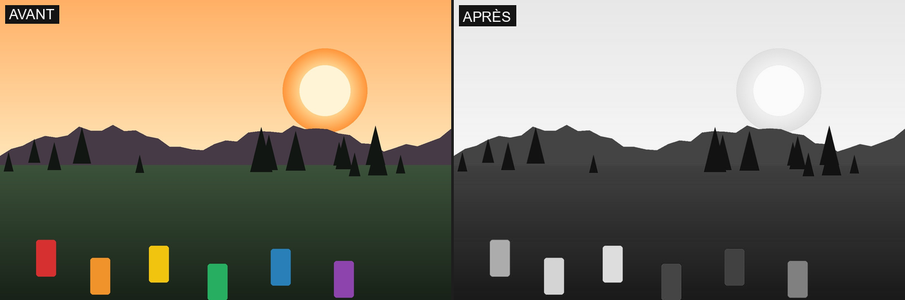
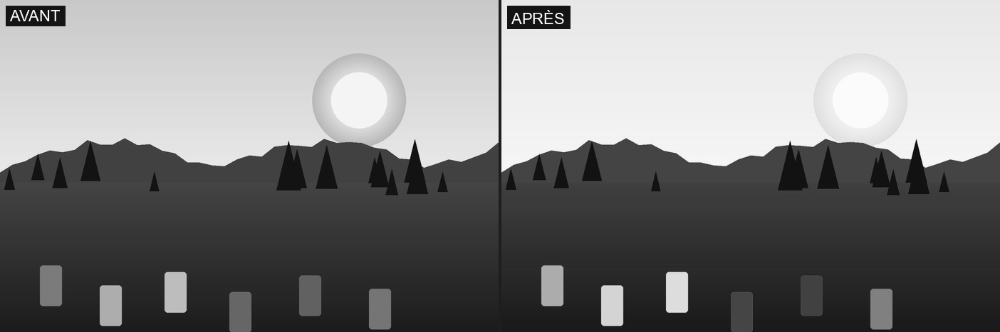

4.5 B&W
Engine: identical to Film (§4.1) — same film.py module. Every non-neutral preset switches to a custom R/G/B-weighted grayscale conversion (instead of standard HSL luminance), with grain often depending on tone depth (more pronounced in the shadows).
Thumbnails
| Thumbnail | Effect |
|---|---|
| Neutral | No transformation. |
| Acros | Panchromatic grayscale conversion (30/59/11 weighting, close to human perception), strong contrast (+30), deepened shadows, fine grain boosted specifically in the shadows (Acros' signature: clean in the highlights, grainy in the shadows). |
| Acros + Yellow | Acros base, weighting rebalanced to even out red and green (blue reduced) — the equivalent of a yellow filter: moderately darkens blue sky, natural rendering of skin/foliage. |
| Acros + Red | Acros base, red strongly dominant — the equivalent of a red filter: strongly darkens sky and foliage, brightens red/warm subjects; dramatic rendering, contrasty sky. |
| Acros + Green | Acros base, green dominant — the equivalent of a green filter: brightens foliage and green subjects, darkens red; good skin-tone separation against green backgrounds. |
| Acros + Blue | Acros base, blue strongly dominant — the equivalent of a blue filter: brightens sky/water/haze, darkens warm tones (skin, red/orange); an unusual, "cold" look. |
| Kodak T-MAX 3200 | Acros base, shadows markedly reopened, strong coarse grain (the signature trait of a pushed high-speed film), Dynamic Range 400, a slightly cold/green gray toning, a slightly cold source white balance with a magenta cast. Evokes a Kodak T-MAX P3200 low-light shot. |
| Kodak Tri-X | Acros base, reopened shadows, clarity at the engine's maximum (very strong local texture/contrast), strong coarse grain, warmed source white balance. The grainy, "punchy" look characteristic of Tri-X photojournalism. |
| Ilford FP4 | Neutral base (weighting close to Rec.601, soft contrast), slightly deepened shadows, boosted clarity, light coarse (soft) grain, Dynamic Range 200, warmed source white balance with a touch of green. A classic black-and-white, fine and measured. |
Manual settings
Strength
- Strength (
intensity, 0..1) — blends the graded result with the original image (or, for a black-and-white look, with its grayscale conversion): 0 = no effect, 1 = full effect.

Tone
- Contrast (
contrast, -100..100) — increases (positive) or reduces (negative) the gap between shadows and highlights around mid-gray.

- Highlights (
highlights, -100..100) — brightens/hardens (positive) or compresses/protects (negative) the bright-tone zone.

- Shadows (
shadows, -100..100) — brightens/opens (positive) or darkens/deepens (negative) the dark-tone zone.

- Black clipping (
black_clip, 0..0.10) — raises the black point: near-black tones are progressively crushed toward pure black.

- Dynamic Range (
dynamic_range, Off/DR200/DR400) — jointly protects highlights and opens shadows (composited from the tone settings above), for a flatter rendering closer to a "log" profile.

Colour
- Global saturation (
global_saturation, ×0..2) — multiplies the saturation of the whole image.

- HSL saturation (
hsl_saturation_scale, ×0..2) — amplifies or reduces the per-hue saturation corrections already built into the selected look (here Classic Chrome, which mutes magenta/red/green/blue); at 0, this component of the look disappears.

- HSL luminance (
hsl_luminance_scale, ×0..2) — amplifies or reduces the look's per-hue luminance corrections (here Astia, which slightly brightens skin/orange tones).

- Temperature (
temperature, -1000..1000) — warms (positive) or cools (negative) the white balance (an approximation, not a Planckian calculation).

- Tint (
tint, -20..20) — pushes toward magenta (positive) or green (negative).

- Split toning (
split_tone_scale, ×0..2) — amplifies or reduces the strength of the shadow/highlight color toning already defined by the look (here Classic Chrome: blue-cyan shadows, golden highlights); at 0, the toning disappears.

- Color Chrome Effect (
color_chrome_effect, Off/Weak/Strong) — deepens/protects the most saturated and brightest pixels of the image, relative to the rest of that same image. The effect only targets the top of the saturation/brightness ranking (percentile) specific to each image — on a photo whose colors are already all close in intensity (like the sample photo used for the other settings), the actually-targeted range is too narrow to see; illustrated here on a grid of hues at several vividness levels, where only the most saturated/brightest row (at the top) is visibly darkened/desaturated, with the duller rows left unchanged.

- Color Chrome Blue (
color_chrome_blue, Off/Weak/Strong) — same mechanism, restricted to blue/cyan hues (sky, water). On the same grid: only the blue/cyan cells of the brightest row change, while every other hue (red, orange, yellow, green, magenta) stays identical — this setting's hue restriction, clearly visible in a direct comparison.

Texture & Grain
- Clarity (
clarity, -100..100) — wide-radius local contrast (blurred mask on luminance); negative = softens/hazes, positive = accentuates mid-tone texture.

- Sharpness (
sharpness, -100..100) — fine detail accentuation (tight-radius, per-channel blurred mask); negative = blur, positive = sharpness.

- Grain (
grain_std, 0..0.05) — adds deterministic film grain (same image, same grain on every render).

Settings specific to black-and-white rendering
Two settings only take effect on a look already converted to grayscale (Acros and the B&W row's presets, §4.5) — with no effect on Film/Bleach Bypass unless a B&W filter is active:
- Mono Colour WC (
mono_color_wc, -20..20) — a warm/cool toning applied to the already-gray image (distinct from Temperature, which acts before the conversion).

- Mono Colour MG (
mono_color_mg, -20..20) — a green/magenta toning applied to the already-gray image.

Filter
- Filter (
filter_color, None/Yellow/Red/Green/Blue) — overlays a Wratten-style colored filter, forcing the grayscale conversion even on a color look: the more weight a channel receives, the brighter subjects of that color appear, and the darker subjects of the opposite color appear.

- Filter strength (
filter_intensity, Light/Medium/Dark) — strength of the selected filter's effect.
